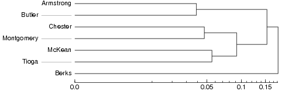

Cluster analysis is applied to the distance matrix with the pair-wise aggregate linguistic distances between places. In clustering, groups are merged based on similarity. To start with, each place is a cluster of its own, a cluster with only one element. The two places that have the smallest linguistic distance in the distance table are merged into a cluster. Then the difference is calculated between that new cluster, and all remaining places. Based on the new distances, again, the objects with the smallest difference are merged. And so on, until all places are merged into one big cluster.
| The history of the clustering procedure is displayed in a dendrogram: |  |
The same small example data set is used as in the explanation of multidimensional scaling. Armstrong and Butler are the two places with the smallest linguistic distance in the distance matrix and they have been grouped together first. After that Chester and Montgomery have been joined, and in the third step McKean and Tioga. After these pairs have been formed, the clusters containing Chester and Montgomery and McKean and Tioga are joined to form a cluster with four items. Berks has such a large distance to all other sites that it has been merged with the rest only in the very last step of clustering.
When making a dialect classification, you proceed from the right to the left in the dendrogram until you find the break point with as many branches as you want groups in your classification. The break point is marked with a read line in the dendrograms below.
| So if one would like to make a division into two clusters of this small data set, Berks would be in one group by itself and all the other places would form the second group together. | |
| In a division into three groups, there would be one group with one member (Berks), one group with four members, and one group with two members. |  |
A map can be created by coloring the area of each cluster with a distinct color. The colors in these maps are arbitrary. Similarity of colors does not imply linguistic similarity, but each distinct color simply denotes one cluster. This is how a cluster map with four clusters would look: